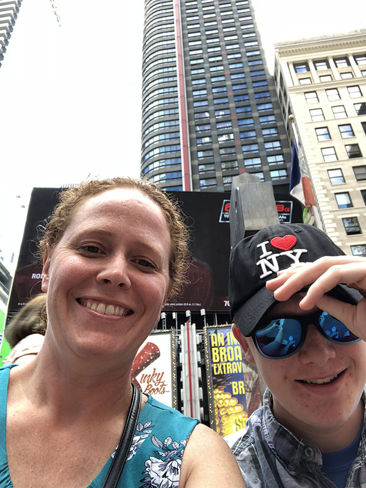
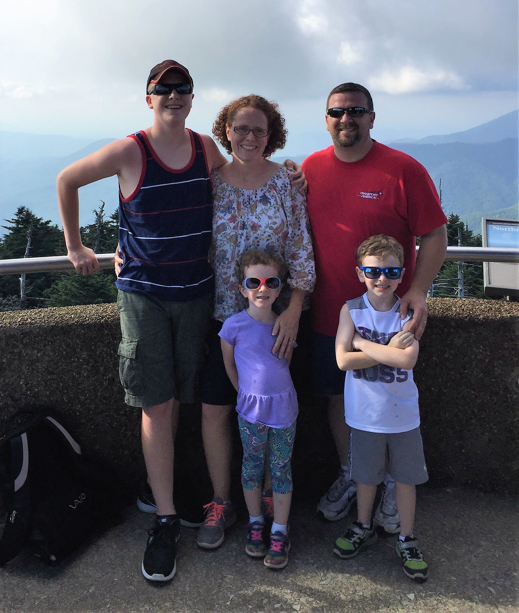

| Mini Project 1 | Mini Project 2 | Mini Project 3 | Mini Project 4 | Mini Project 5 | Mini Project 6 |
|  | Hi friends! My name is Sharon Piskur. I am currently in my 19th year of teaching for Akron Public Schools. I am in the middle of working on my master’s degree in Instructional Technology at the University of Akron. Our school district has implemented its 1:World initiative so I wanted to be ready to teach valuable lessons in engaging ways for my students. |
I am married and have 3 children, ages 6, 7, and 17. We live in a rural community in Medina County, Ohio. Two of my favorite places to travel with my family are the Smoky Mountains in Tennessee, and San Antonio, Texas. The picture I have posted is of my oldest son and I on a weekend trip to NYC! I am hoping to make it to the Grand Canyon in the next year or so, then we will likely add it to our list of favorites! |
 |